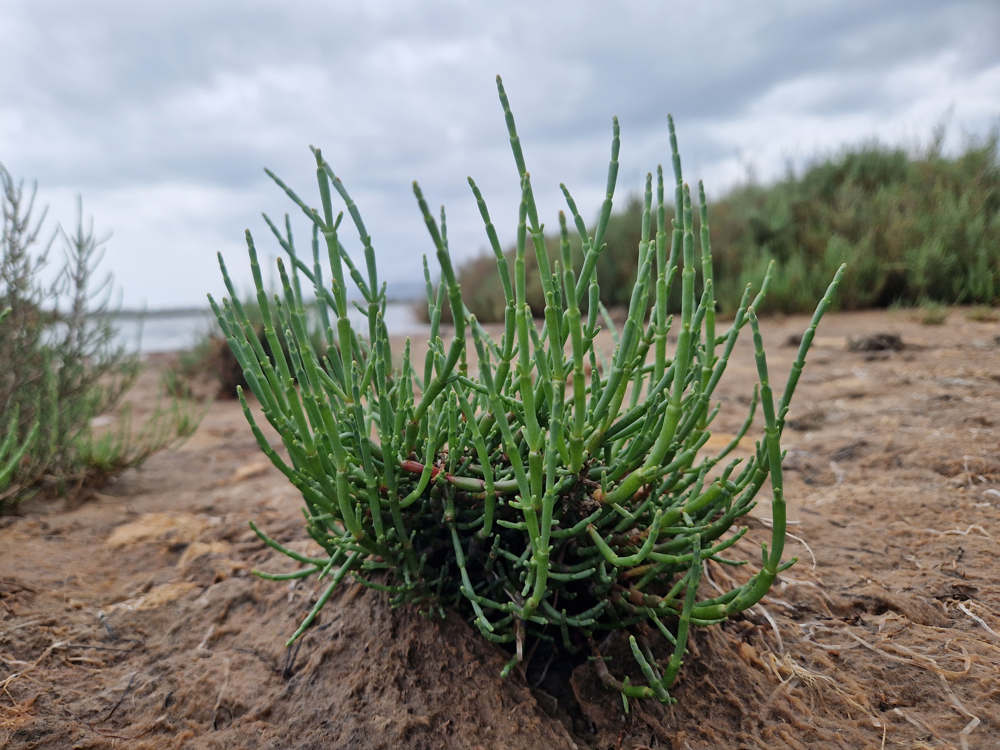
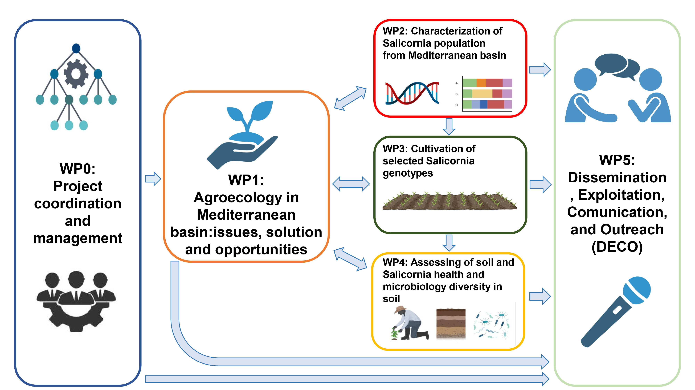

L'agricoltura nella regione mediterranea sta affrontando sfide ambientali sempre più importanti. I sistemi agricoli intensivi basati sulla monocoltura e su un elevato consumo di risorse contribuiscono alla scarsità d'acqua, al degrado del suolo e alla perdita di biodiversità. Combinate con gli effetti del cambiamento climatico, queste pressioni minacciano la sostenibilità agricola, la resilienza degli ecosistemi e la sicurezza alimentare a lungo termine. Affrontare queste sfide richiede una transizione verso sistemi agricoli che proteggano le risorse naturali rimanendo economicamente sostenibili. L'agroecologia è ampiamente riconosciuta come un percorso promettente verso un'agricoltura sostenibile. Integrando principi ecologici nelle pratiche agricole e promuovendo la diversificazione a livello di coltura, azienda agricola e paesaggio, i sistemi agroecologici mirano a rafforzare la biodiversità, migliorare la fertilità del suolo, conservare le risorse idriche e rafforzare la resilienza al cambiamento climatico. Questi obiettivi sono fortemente allineati con le principali priorità politiche europee, tra cui il Green Deal Europeo e la Strategia dell'UE per la Biodiversità 2030. Il progetto SAGA sostiene questa transizione attraverso un approccio partecipativo e guidato dalla scienza. Verranno istituiti Living Labs in Italia, Portogallo, Tunisia e Turchia, che riuniranno agricoltori, ricercatori, intermediari di conoscenza e decisori politici per testare e sviluppare insieme pratiche agroecologiche innovative adattate ai contesti locali. Un punto focale del progetto è il potenziale degli alofiti, piante naturalmente adattate agli ambienti salini. Tra questi, il genere Salicornia, originario del bacino del Mediterraneo, rappresenta una coltura particolarmente promettente grazie alla sua capacità di crescere in suoli altamente salini non adatti all'agricoltura convenzionale. La Salicornia può contribuire al ripristino del suolo, alla conservazione dell'acqua e alla resilienza dei sistemi agricoli nelle aree degradate e a rischio di salinizzazione. Per valorizzare questo potenziale, SAGA condurrà un programma integrato di genotipizzazione e fenotipizzazione su popolazioni di Salicornia raccolte in tutta la regione mediterranea. Utilizzando tecnologie di sequenziamento del DNA, il progetto analizzerà la variabilità genetica e chiarirà l'identificazione delle specie tra le popolazioni campionate in Italia, Portogallo, Tunisia e Turchia. Parallelamente, la caratterizzazione fenotipica valuterà tratti chiave come la capacità di accumulo di sale, le dinamiche di crescita, la produzione di biomassa e la composizione biochimica. Integrando dati genomici e fenotipici, SAGA mira a identificare le specie e i genotipi di Salicornia più adatti a migliorare la qualità del suolo, aumentare la ritenzione idrica e sostenere un'agricoltura sostenibile negli ambienti salini.

Studiare la biodiversità delle popolazioni naturali di Salicornia nel bacino del Mediterraneo.
Genotipizzare e fenotipizzare la Salicornia derivata da popolazioni naturali.
Selezionare genotipi con caratteristiche agroecologiche rilevanti.
Valutare l'efficacia agroecologica dei genotipi selezionati nei siti dimostrativi.
Coordinamento e gestione del progetto.
Agroecologia nel bacino del Mediterraneo: problematiche, soluzioni e opportunità.
Caratterizzazione delle popolazioni di Salicornia del bacino del Mediterraneo.
Coltivazione dei genotipi selezionati di Salicornia.
Valutazione della salute del suolo e della Salicornia e della diversità microbiologica del suolo.
Disseminazione, sfruttamento, comunicazione e divulgazione (DECO).



Articoli scientifici, dataset e report saranno elencati qui.
Aggiornamenti del progetto, conferenze e risultati raggiunti.